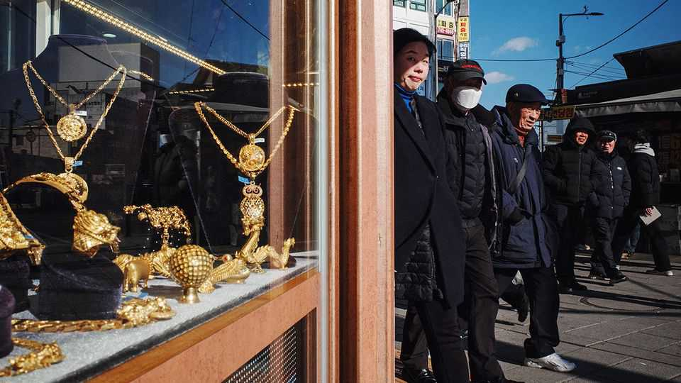
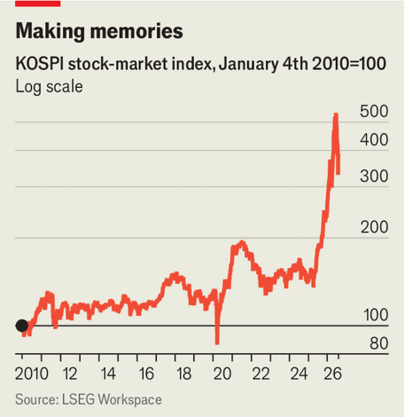
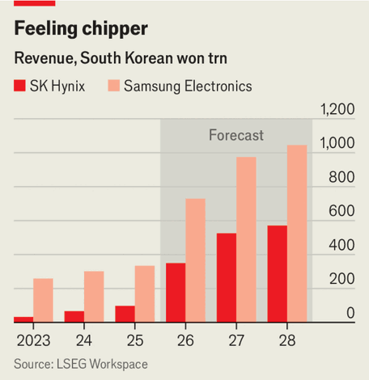

How AI-fuelled wealth is reshaping South Korea
Leaders must decide how to manage a big windfall

Aug 6th 2026
AN UNKEMPT man walks into a pricey shop. The staff dismiss him—until he takes off his jacket and reveals a gilet emblazoned with “SK Hynix”, a semiconductor firm known for handing out massive bonuses. This imagined scene—a recent skit on a South Korean comedy show—lampoons real ones unfolding as AI-driven wealth floods the country. Companies that help arrange marriages report a big jump in the desirability of engineers from SK Hynix and Samsung Electronics, another semiconductor-maker. They are now nearly as sought after as doctors and lawyers.
An AI windfall is reshaping South Korean society. Speaking in Silicon Valley on July 25th, Lee Jae Myung, South Korea’s president, compared the AI era to the discovery of fire and called it “a truly new opportunity for Korea”. But the new era also brings risks: South Korea’s benchmark stock index, KOSPI, has doubled in value in the past year but dipped 22% in July. A series of wild swings have made it the most volatile stock market in the world.

Fierce debates rage in Seoul over how to ensure that new wealth is shared equitably and stewarded sustainably. “This raises a new policy challenge for us: how should we approach such extraordinary excess profits from a socioeconomic perspective and from the standpoint of national policy?” Mr Lee said during an interview with The Economist in June. The following month his government announced a “Future Response Fund” to invest newfound tax revenue for generations to come. The market gyrations and policy debates are a preview of processes likely to play out elsewhere as AI adoption spreads. “This is an issue that requires broader international discussion,” Mr Lee added.
Wealth is flowing into South Korea because its firms provide infrastructure AI model-makers need, such as high-bandwidth memory chips. South Korean officials speak of producing “picks and shovels” for an AI gold rush. While the gold miners may or may not hit paydirt, the pickmakers (or, rather, the chipmakers) are already flush. On July 30th Samsung Electronics said operating profit in the second quarter was 89.5trn won ($63bn), up 1,800% from a year earlier. One day earlier SK Hynix said operating profit in the same quarter grew 557%, year on year.

Their workers want a bigger share. Last year SK Hynix agreed to set aside 10% of its operating profit for bonuses. Samsung’s powerful labour union threatened a strike in May, demanding a cut of soaring profits. A last-ditch agreement staved off a factory shutdown; some bonuses will exceed $400,000. Such payouts are unheard of in a country where the average annual salary is less than $40,000. A new class of workers has been minted: neither white- nor blue-collar, but “silicon-collar”.
Yet the spoils have largely been limited to chip-industry insiders. The government recently raised its GDP growth forecast for 2026 from 2% to 3%, but that is largely thanks to booming exports. Except near chip factories, consumption has been sluggish. People outside the industry have looked to equities for a piece of the action. Retail investors poured 78trn won ($54bn) into South Korean stocks in May and June; many were burned when shares fell in July.
The broadest benefit will be fiscal, as corporate- and income-tax revenues flood government coffers. Corporate-tax receipts from Samsung and SK Hynix alone could yield as much as the government expected to receive in total from corporate taxation this year. Overall tax revenue is projected to reach 500trn won next year, equal to 17% of GDP and a record high.
Policymakers are grappling with how to manage the windfall. Kim Yong-beom, Mr Lee’s chief domestic-policy adviser, sparked debates in May with a personal Facebook post musing about a possible “citizen dividend” funded through excess tax revenues. Speaking to The Economist, Mr Lee suggested that a basic income could be one of several useful policy options.
One faction is arguing for more sweeping redistribution. Chipmakers’ success was made possible by “long-term public investment by the state and support from taxpayers and the public”, and should be returned in part to the public, says Oh Jun-ho of the Basic Income Research Institute. Proposals include creating new top corporate-tax brackets for higher-earning companies, imposing windfall levies, or giving the public stakes in the firms. Labour groups call for funnelling the proceeds of potential new taxes first to chipmakers’ subcontractors. The entire industry takes a hit during downturns, and “the same should apply when massive profits are generated”, says Lee Gyeo-re of the Korean Confederation of Trade Unions.
Others see such calls as misguided. Chipmaking requires continuous investment: new levies could discourage it. The public’s claim to revenues generated by private-sector electronics firms is not akin to its right to benefit from nationally owned oil and gas companies—even if some in South Korea like to compare them. It is true that AI labs have trained their models using data created by whole societies. But that is not the game South Korea’s chipmakers are in, says Rhee Chang-yong, a former governor of the Bank of Korea: “They benefit from AI, but they are not AI.”
For now the government is trying to strike a balance between protecting the private sector and spreading the wealth. The proposed Future Response Fund is the first attempt at creating a mechanism to do that. Mr Lee says it will use only the extra tax revenue flowing into government coffers through existing channels, and will support future industries, young people, regional development and education.
Other initiatives aim to direct the next wave of investment. Last month officials announced separate plans to inject at least 20trn won ($14bn) into the Korea Investment Corporation, an existing sovereign-wealth fund, for additional investment in AI, data centres and supporting infrastructure. The government also wants chipmakers to direct capital spending to less-developed regions. South Korea is enjoying a magic moment, Mr Rhee says. “But we shouldn’t have a big party—we need to think about how to maintain our competitiveness into the future.” ■
For exclusive coverage of Asian politics, economics and security, sign up to Asia Bulletin, our weekly subscriber-only newsletter.